La ventana de Recuperación de Contraseña es parte del componente de Seguridad del sistema,
desarrollado para Embutidos de Calidad S.A. Su función es permitir que un usuario recupere el
acceso a su cuenta cuando olvidó su contraseña, sin necesidad de que un administrador intervenga.
Se accede desde la ventana de inicio de sesión, dando clic en el enlace "¿Olvidaste tu contraseña?".
El proceso se realiza en dos pasos dentro de la misma ventana: primero se solicita un código de
verificación por correo electrónico, y luego se utiliza ese código para definir una nueva contraseña.
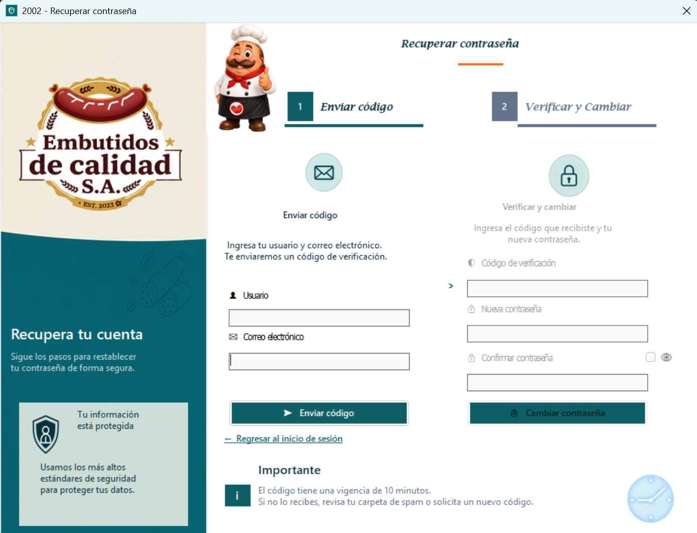
La ventana está dividida en dos secciones: "1. Enviar código" y "2. Verificar y Cambiar". Al abrir la ventana, únicamente está habilitada la primera sección, donde se ingresa el usuario y el correo electrónico. La segunda sección permanece bloqueada hasta que se envía el código correctamente.
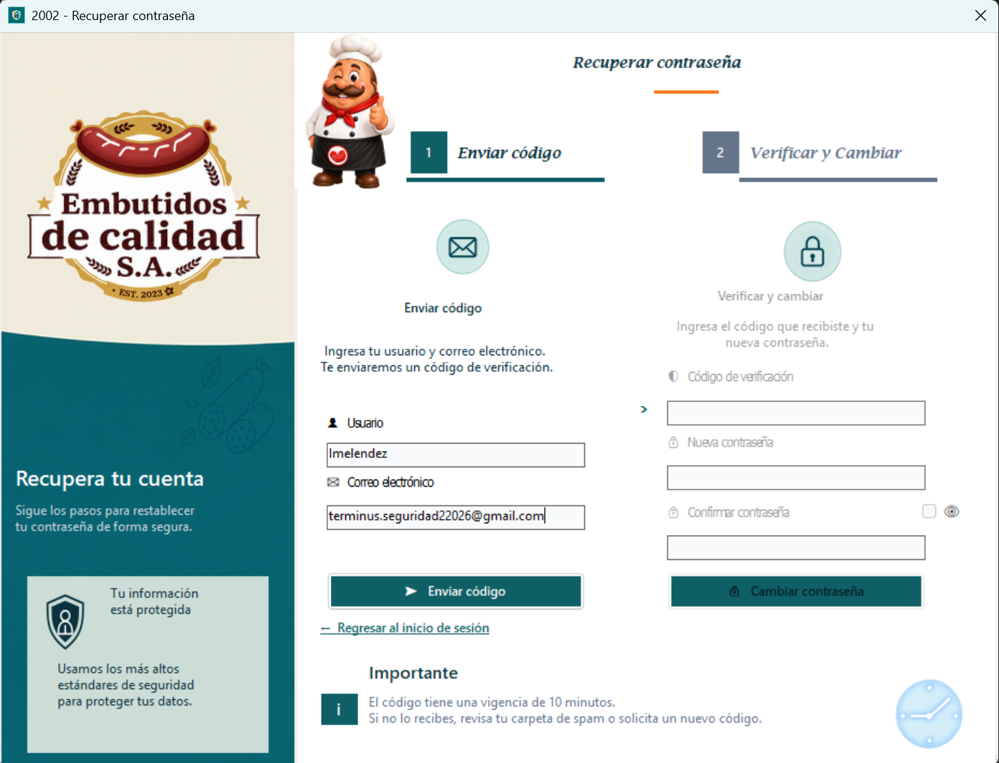
El botón Enviar código genera y envía por correo un código de verificación de 6 caracteres. Los pasos para solicitarlo son los siguientes: 1. Ingresar el nombre de usuario en el campo Usuario. 2. Ingresar el correo electrónico registrado para ese usuario. 3. Presionar el botón "Enviar código". 4. Si los datos coinciden con una cuenta activa, se mostrará el mensaje "Código enviado" y se habilitará la sección "2. Verificar y Cambiar".
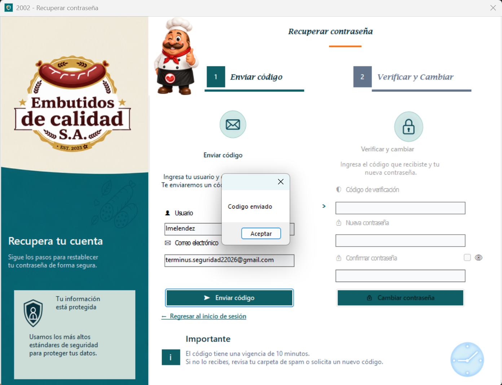
Al enviarse el código correctamente, llega un correo electrónico con el diseño institucional del sistema, dirigido al usuario que solicitó el cambio. El correo incluye el código de verificación de 6 caracteres y una nota indicando el tiempo de vigencia del código y qué hacer en caso de no haber solicitado el cambio.
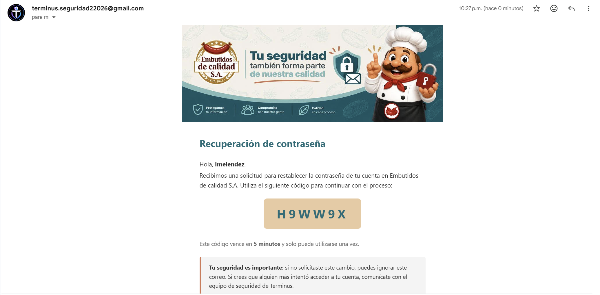
Una vez recibido el código, se debe completar la sección "2. Verificar y Cambiar". Los pasos son los siguientes: 1. Ingresar el código de verificación recibido por correo. 2. Ingresar la nueva contraseña. 3. Confirmar la nueva contraseña, debe coincidir exactamente con la anterior. 4. Presionar el botón "Cambiar contraseña".
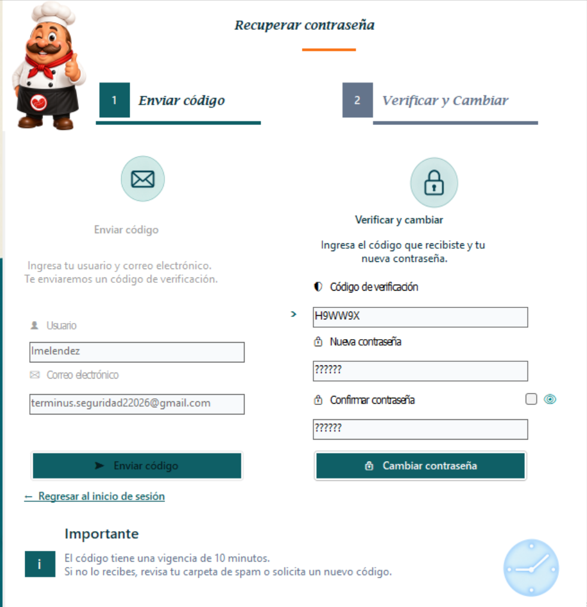
Junto a los campos de nueva contraseña y confirmar contraseña hay una casilla con un ícono de ojo que permite mostrar u ocultar el texto capturado, para que el usuario pueda verificar que escribió correctamente su nueva contraseña antes de guardarla.
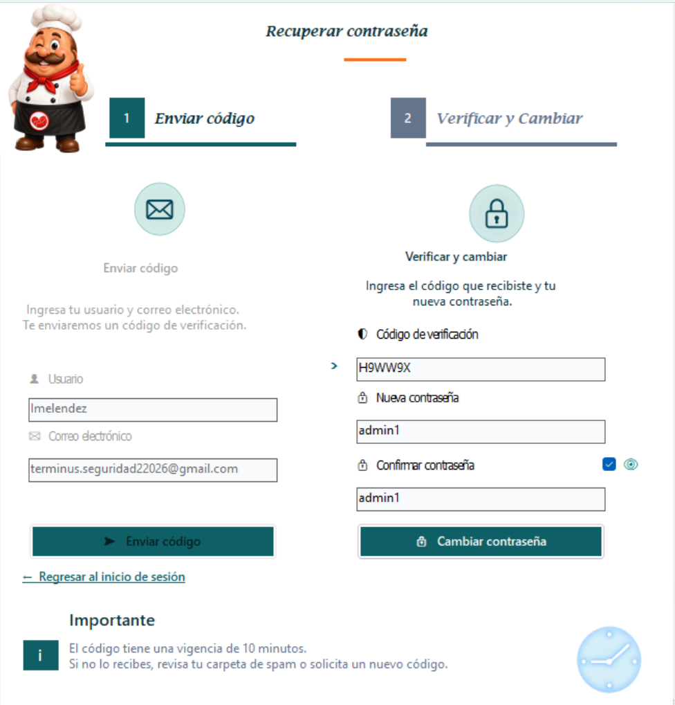
Si el código es válido y las contraseñas ingresadas coinciden, el sistema actualiza la contraseña del usuario y muestra el mensaje "Contraseña actualizada". Al aceptar el mensaje, la ventana regresa al inicio de sesión para que el usuario pueda ingresar con su nueva contraseña.
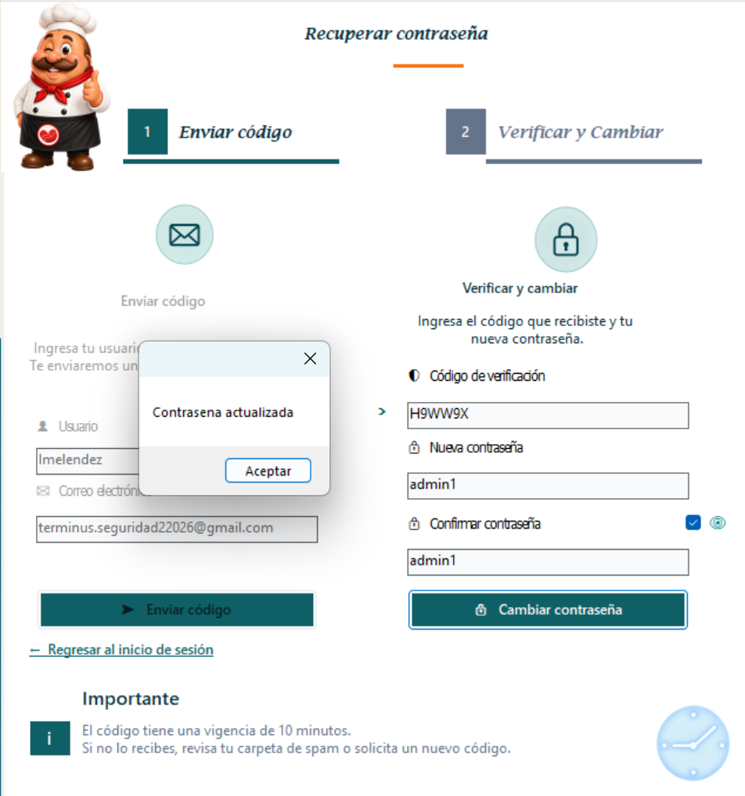
Si el usuario o el correo electrónico ingresados no corresponden a una cuenta activa del sistema, se muestra el mensaje "El usuario y el correo no coinciden con ninguna cuenta activa" y no se envía ningún código.
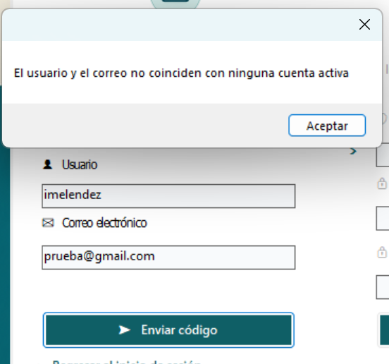
Si el código ingresado no corresponde al enviado, ya fue utilizado, o su tiempo de vigencia venció, se muestra el mensaje "El código es inválido o ya expiró" y no se realiza ningún cambio de contraseña.
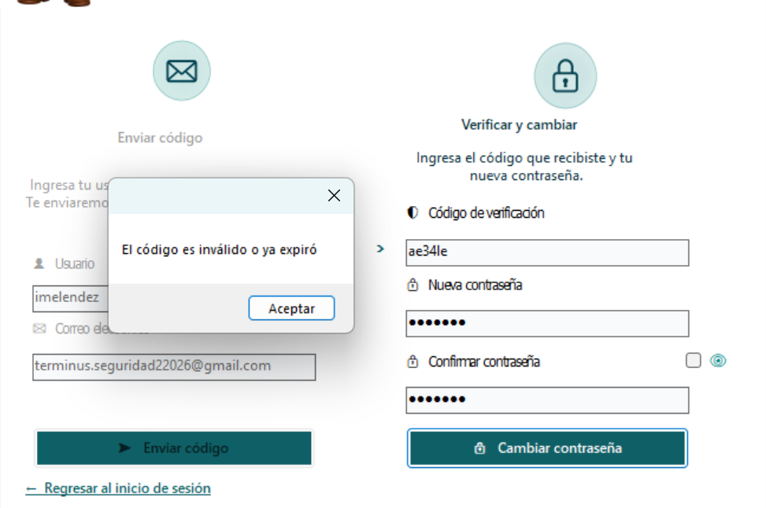
Si la nueva contraseña y su confirmación no son exactamente iguales, se muestra el mensaje "Las contraseñas no coinciden" y se debe corregir antes de poder continuar.
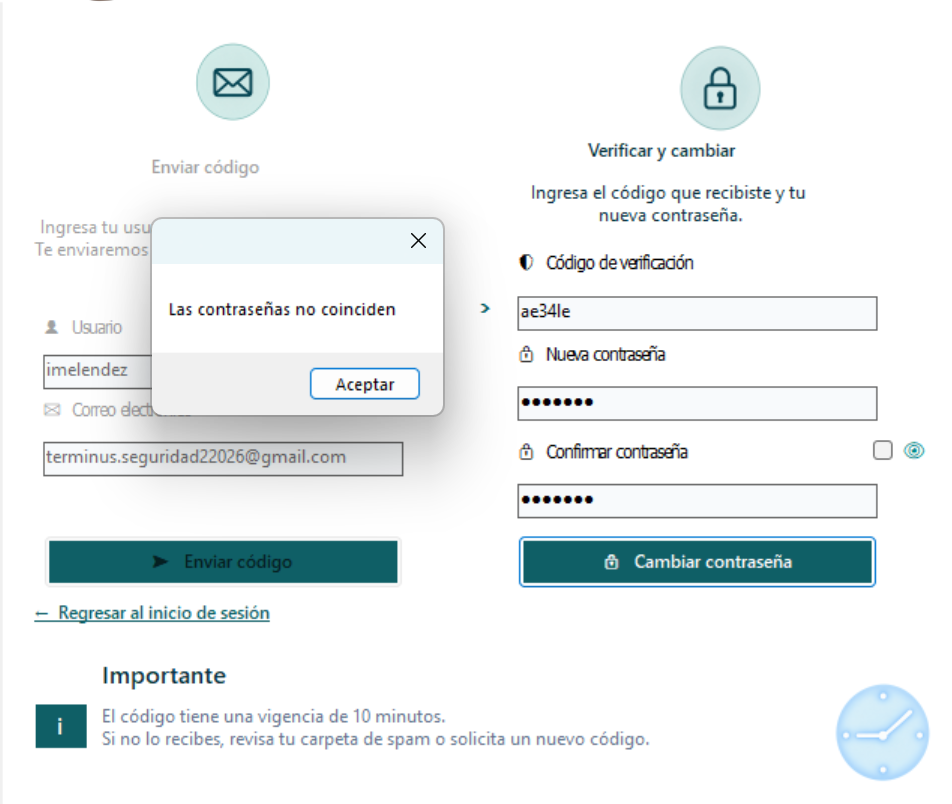
El enlace "Regresar al inicio de sesión" cierra la ventana de recuperación sin realizar cambios y regresa a la ventana de Login, desde donde se puede iniciar sesión normalmente.
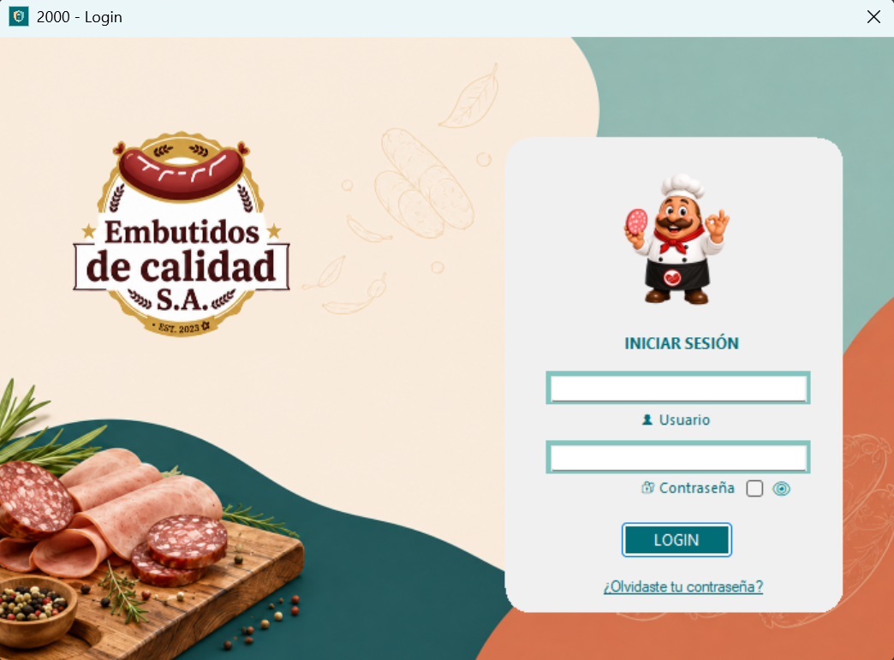